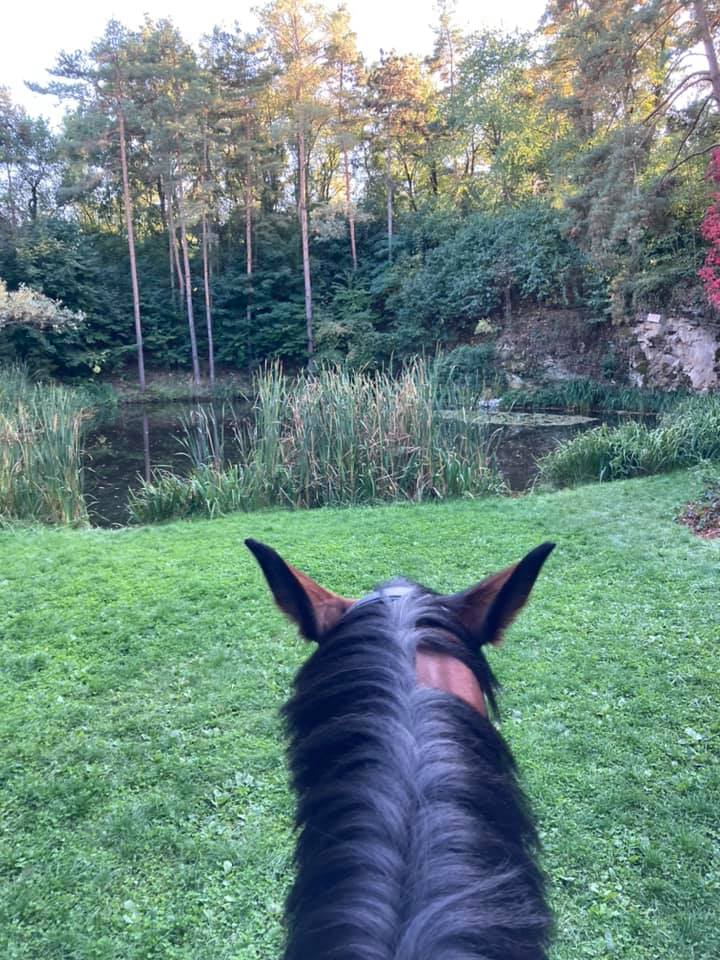
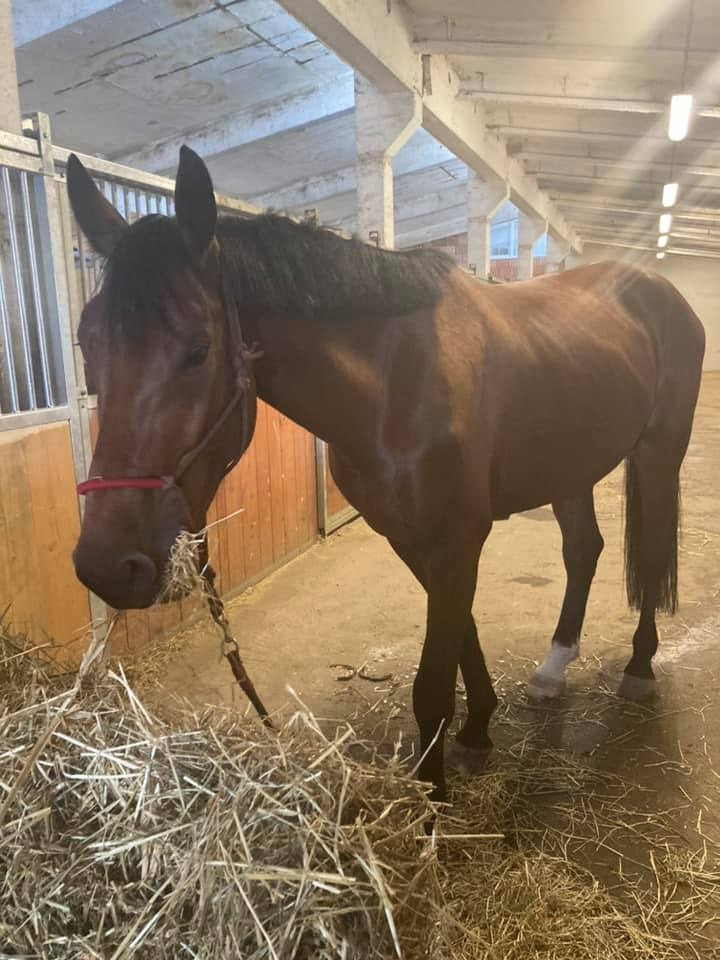
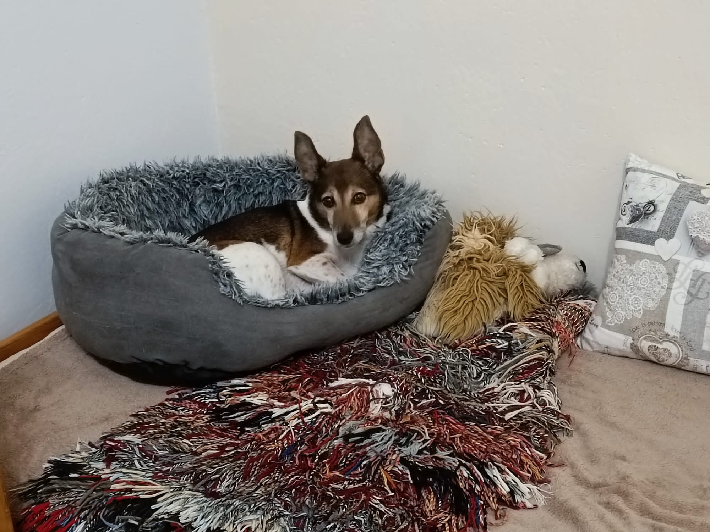
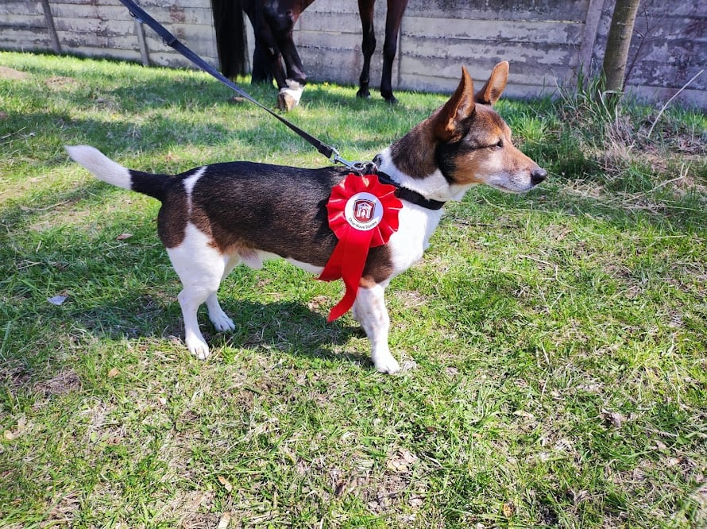

Ahoj, jmenuji se Zuzka a mám moc ráda turistiku, sport a zvířata. Na turistiku nejraději chodím někam do přírody, kde si můžu užívat ticha a klidu. Ze sportů mě nejvíce baví běh a moje zvířátka bych vám ráda představila v této vizitce. Mám jednoho pejska Paddyho a koně Wariho.
V současné době pracuji jako lékárnice. Po vystudování farmaceutické fakulty jsem do tohoto povolání šla s odhodlání pomáhat lidem a uzdravovat je. Jak se ale bohužel ukázalo, lidé lékárnu vnímají spíše jako obchod, než jako zdravotnické zařízení a zamestnance jako prodavačky než jako vystudovaný zdravotnický personál. A tak jsem se pustila do programování. Nejdříve sama a pak jsem objevila kurzy czechitas, které mě moc baví a doufám, že jednou ze mě bude vývojář nebo že budu moct propojit farmaceutické znalosti v IT oboru.
Již od mala jsem měla moc ráda zvířata. Začínala jsem s morčatama, králíčkama a křečkama, až mě nakonec začalo bavit jezdectví a psí agility. Ze začátku jsem chodila do jezdeckých oddílů, abych se vše kolem koní naučila, ale mým velkým snem bylo mít vlastního koně a tak před třemi lety jsem si pořídila parťáka na celý život.
Warox Ruf alias Wari je sedmiletý valach českého teplokrevníka, potomek Warnesse. I přes skokový původ s koníkem jezdíme drezuru, ale zabýváme se také přirozenou komunikací (horsemanshipem) a našim velkým snem je jezdit bez uzdečky a otěží. Wari se učastnil nekolika drezurních závodů, ale následně z důvodu zranění, které jsme skoro půl roku léčili, si musel dát pauzu. Vše naštěstí dobře dopadlo a již se těšíme na další závodní sezonu.
 Další nedílnou součástí mojí Zoo je pejsek Paddy. Je to desetiletý jack russel terier (maminka byla jack russel, otec bohužel neznámý :D ale nejvíce se podobá na russlíka :D). Povahou je to opravdový terier, nic ho nezastaví a je to neunavitelné zvíře. Ještě donedávna semou chodil s koňmi na vyjížďky, ale v současné době, i když má energie na rozdávání, na nás raději čeká ve stáji. Moc rád semnou chodí běhat nebo na turistické výlety a je to ten nejlepší parťák.
 © 2023, Zuzana Matiašková